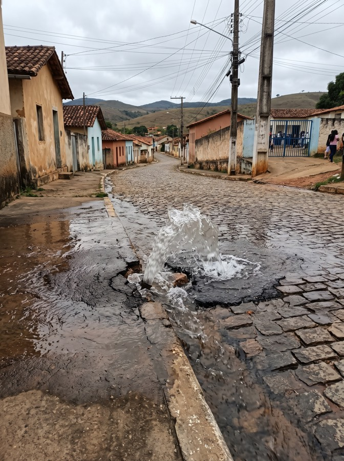
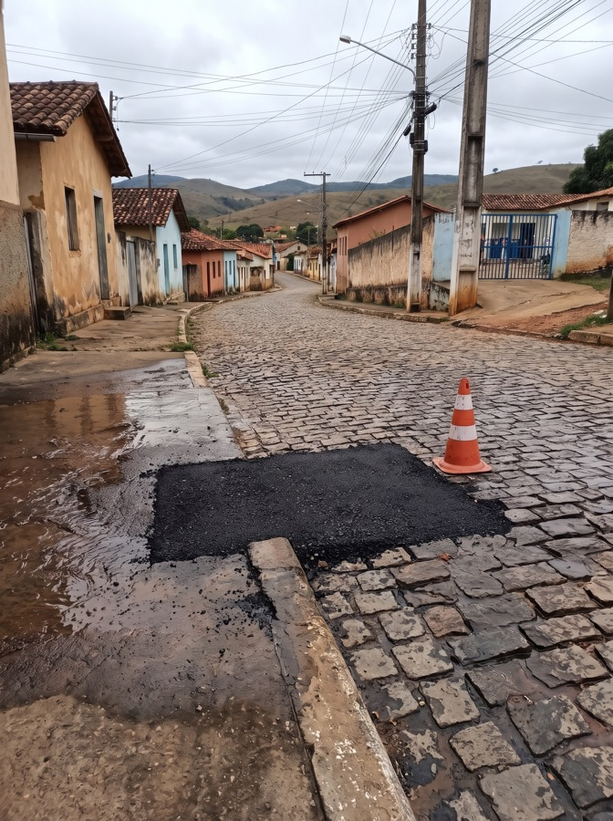
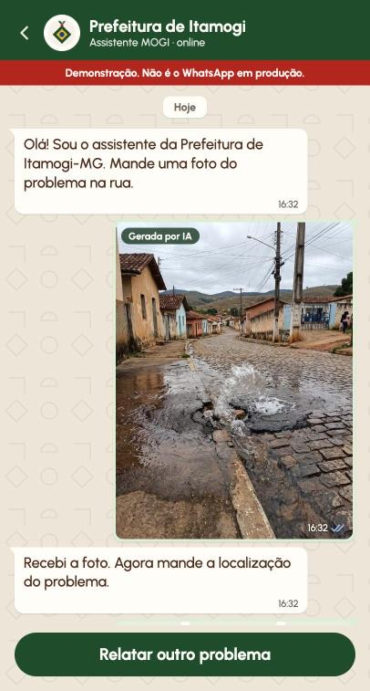
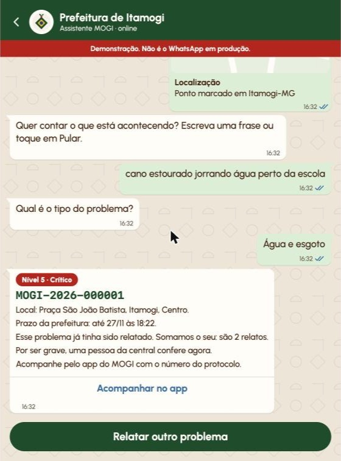
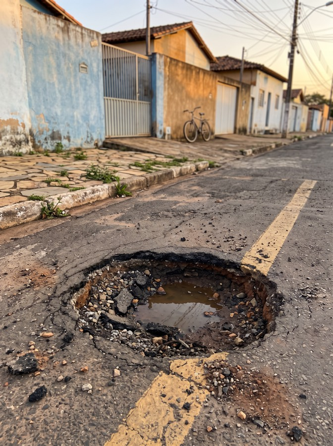
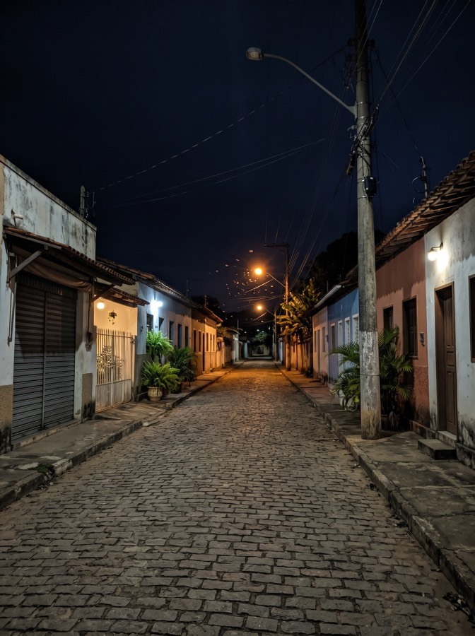
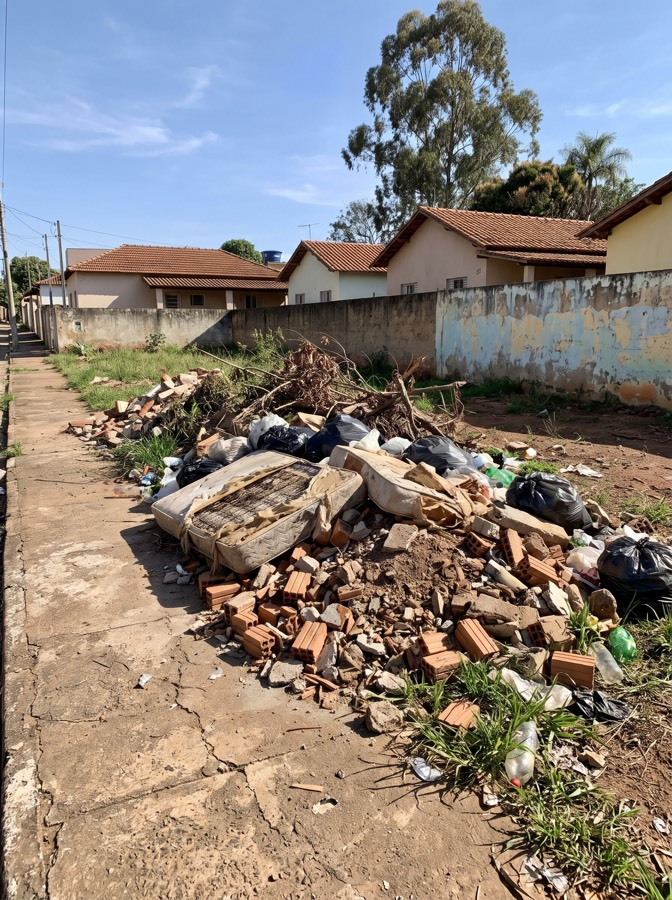

<meta charset="utf-8">
<title>Sistema MOGI</title>
<meta name="claude:viewport-fit-sides" content="cover">
<link rel="preconnect" href="https://fonts.googleapis.com">
<link rel="preconnect" href="https://fonts.gstatic.com" crossorigin>
<link rel="stylesheet" href="https://fonts.googleapis.com/css2?family=Urbanist:wght@500;700;900&family=JetBrains+Mono:wght@500;700&display=swap">
<style>
/* Layout: página de imagens. Foto real do problema no topo, depois um diagrama por ideia; texto só como legenda. */
:root {
  --creme: #F5F1E8; --papel: #FFFDF7; --cafezal: #1F4D2B; --cafezal-fundo: #12301A;
  --cereja: #B3261E; --ipe: #E9B526; --ceu: #3B6EA5;
  --fundo: var(--creme); --cartao: var(--papel); --tinta: #1F4D2B; --apoio: #5E5548; --linha: #E4DCCB;
  --n1: #3E7B3A; --n2: #7A9A2E; --n3: #E9B526; --n4: #D9731A; --n5: #B3261E;
  --display: 'Urbanist', system-ui, -apple-system, 'Segoe UI', Roboto, Arial, sans-serif;
  --mono: 'JetBrains Mono', ui-monospace, SFMono-Regular, Menlo, monospace;
}
@media (prefers-color-scheme: dark) { :root:not([data-theme="light"]) {
  --fundo: #0F1A12; --cartao: #17271B; --tinta: #EDE7D8; --apoio: #B9B09F; --linha: #2C4232; color-scheme: dark } }
:root[data-theme="dark"] { --fundo: #0F1A12; --cartao: #17271B; --tinta: #EDE7D8; --apoio: #B9B09F; --linha: #2C4232; color-scheme: dark }

* { box-sizing: border-box; }
body { background: var(--fundo); color: var(--tinta); font: 500 1rem/1.5 var(--display); }
.faixa { padding-left: max(16px, env(safe-area-inset-left, 0px)); padding-right: max(16px, env(safe-area-inset-right, 0px)); padding-block: 3rem; }
.miolo { max-width: 1040px; margin: 0 auto; display: grid; gap: 1.5rem; }
h1, h2, h3 { margin: 0; line-height: 1.05; text-wrap: balance; }
h2 { font-size: clamp(1.7rem, 4.5vw, 2.6rem); font-weight: 900; letter-spacing: -0.01em; }
p { margin: 0; text-wrap: pretty; }
.rotulo { font: 700 0.72rem/1 var(--mono); letter-spacing: 0.1em; text-transform: uppercase; color: var(--apoio); }
.ia { position: absolute; left: 10px; top: 10px; font: 700 0.62rem/1 var(--mono); letter-spacing: .06em; text-transform: uppercase; background: rgba(18,48,26,.82); color: #F5F1E8; padding: 5px 8px; border-radius: 999px; }
svg text { font-family: var(--display); }

/* Topo: antes e depois da mesma rua. */
.topo { background: var(--cafezal-fundo); color: #F5F1E8; margin-top: calc(-1 * env(safe-area-inset-top, 0px)); padding-top: calc(env(safe-area-inset-top, 0px) + 2.5rem); }
.topo .miolo { grid-template-columns: minmax(0, 1fr) minmax(0, 1.15fr); align-items: center; gap: 2rem; }
.topo .rotulo { color: #B9D3B0; }
.topo h1 { font-size: clamp(3rem, 10vw, 5.6rem); font-weight: 900; letter-spacing: -0.03em; }
.topo h1 span { color: var(--ipe); }
.topo .tese { font-size: 1.35rem; font-weight: 700; color: #E7EFE3; max-width: 22ch; }
.escala { display: grid; grid-template-columns: repeat(5, 1fr); gap: 4px; max-width: 360px; }
.escala span { height: 34px; border-radius: 8px; display: grid; place-items: center; font: 900 1.1rem/1 var(--display); color: #fff; }
.escala span:nth-child(3) { color: #2A2108; }
.escala-leg { display: flex; justify-content: space-between; max-width: 360px; font-size: .78rem; color: #B9D3B0; }
.par { display: grid; grid-template-columns: 1fr 1fr; gap: 10px; }
.par figure { margin: 0; position: relative; border-radius: 18px; overflow: hidden; }
.par img { display: block; width: 100%; aspect-ratio: 3/4; object-fit: cover; }
.par figcaption { position: absolute; left: 0; right: 0; bottom: 0; padding: 26px 12px 10px; background: linear-gradient(transparent, rgba(0,0,0,.72)); font-weight: 900; font-size: 1.05rem; }
.par figcaption small { display: block; font-weight: 500; font-size: .78rem; opacity: .85; }
.par .antes figcaption b { color: #FF9C93; }
.par .depois figcaption b { color: #A8E29C; }

/* Dor em três números. */
.dor { display: grid; grid-template-columns: repeat(3, minmax(0, 1fr)); gap: 1rem; }
.dor div { display: grid; gap: .3rem; padding-top: .9rem; border-top: 4px solid var(--cereja); }
.dor div:nth-child(2) { border-color: var(--ipe); }
.dor div:nth-child(3) { border-color: var(--cafezal); }
.dor b { font-size: clamp(2rem, 6vw, 3rem); font-weight: 900; font-variant-numeric: tabular-nums; line-height: 1; }
.dor small { color: var(--apoio); font-size: .82rem; }
.canais { display: flex; flex-wrap: wrap; gap: 8px; align-items: center; }
.canais span { padding: 6px 12px; border-radius: 999px; border: 1px dashed var(--apoio); color: var(--apoio); font-size: .85rem; }
.canais .seta { border: 0; padding: 0; font-size: 1.3rem; }
.canais .mogi { border: 0; background: var(--cafezal); color: #F5F1E8; font-weight: 700; }

/* Fluxo. */
.fluxo-caixa { overflow-x: auto; }
.fluxo { width: 100%; min-width: 760px; height: auto; display: block; }
.fluxo-celular { display: none; }

/* Telas. */
.telas { display: grid; grid-template-columns: repeat(auto-fit, minmax(200px, 1fr)); gap: 1.25rem; align-items: start; }
.celular { margin: 0; justify-self: center; width: min(100%, 250px); border-radius: 30px; padding: 8px; background: #11160F; box-shadow: 0 18px 40px rgba(18,48,26,.25); }
.celular img { display: block; width: 100%; border-radius: 23px; aspect-ratio: 406/757; object-fit: cover; object-position: top; }
.legenda { font-size: .85rem; color: var(--apoio); text-align: center; margin-top: .5rem; }
.exemplos { display: grid; grid-template-columns: repeat(4, minmax(0, 1fr)); gap: 8px; }
.exemplos figure { margin: 0; position: relative; border-radius: 12px; overflow: hidden; }
.exemplos img { display: block; width: 100%; aspect-ratio: 3/4; object-fit: cover; }
.exemplos figcaption { position: absolute; bottom: 0; left: 0; right: 0; padding: 18px 8px 6px; background: linear-gradient(transparent, rgba(0,0,0,.7)); color: #fff; font-weight: 700; font-size: .78rem; }
.exemplos .nivel { position: absolute; right: 8px; top: 8px; width: 26px; height: 26px; border-radius: 50%; display: grid; place-items: center; font-weight: 900; color: #fff; font-size: .85rem; }

/* IA em duas raias. */
.raias { display: grid; gap: 1rem; }
.raia { display: grid; grid-template-columns: 110px minmax(0, 1fr); gap: 1rem; align-items: center; }
.raia .selo { font: 700 .7rem/1.2 var(--mono); letter-spacing: .06em; text-transform: uppercase; padding: 8px 10px; border-radius: 10px; text-align: center; }
.raia.hoje .selo { background: var(--cafezal); color: #F5F1E8; }
.raia.plano .selo { background: var(--ipe); color: #2A2108; }
.passos { display: flex; align-items: center; gap: 6px; flex-wrap: wrap; }
.passos span { padding: 10px 12px; border-radius: 12px; background: var(--cartao); border: 1px solid var(--linha); font-weight: 700; font-size: .9rem; }
.passos span.lua { background: var(--ipe); color: #2A2108; border-color: transparent; }
.passos span.fora { border-style: dashed; }
.passos i { font-style: normal; color: var(--apoio); }
.nota { font-size: .85rem; color: var(--apoio); }

/* Infra: gráfico. */
.grafico { width: 100%; height: auto; display: block; max-width: 760px; }
.grafico-caixa { overflow-x: auto; }

/* Privacidade: ícones. */
.icones { display: grid; grid-template-columns: repeat(auto-fit, minmax(150px, 1fr)); gap: 1rem; }
.icones div { display: grid; gap: .5rem; justify-items: start; }
.icones svg { width: 44px; height: 44px; }
.icones b { font-size: .98rem; }
.falta { justify-self: start; background: #FCE8E6; color: #7D1711; border: 2px dashed var(--cereja); border-radius: 10px; padding: .5rem .75rem; font-weight: 700; font-size: .85rem; }

/* Linha do tempo. */
.tempo-caixa { overflow-x: auto; }
.tempo { width: 100%; min-width: 680px; height: auto; display: block; }

/* Benchmarks. */
.bench { display: grid; grid-template-columns: repeat(auto-fit, minmax(210px, 1fr)); gap: 1rem; }
.bench div { padding: 1rem; border-radius: 16px; background: var(--cartao); border: 1px solid var(--linha); display: grid; gap: .3rem; align-content: start; }
.bench b { font-size: 1.6rem; font-weight: 900; line-height: 1.05; }
.bench small { color: var(--apoio); font-size: .82rem; }
.bench .destaque { background: var(--cafezal); color: #F5F1E8; border-color: transparent; }
.bench .destaque small { color: #CFE0C9; }

.rodape { border-top: 1px solid var(--linha); color: var(--apoio); font-size: .85rem; }
.rodape .miolo { gap: .5rem; }

@media (max-width: 760px) {
  .topo .miolo { grid-template-columns: 1fr; }
  .dor { grid-template-columns: 1fr; }
  .exemplos { grid-template-columns: repeat(2, minmax(0, 1fr)); }
  .raia { grid-template-columns: 1fr; }
  .fluxo-caixa { display: none; }
  .fluxo-celular { display: grid; }
}
.fluxo-celular { gap: 8px; }
.fluxo-celular div { display: grid; grid-template-columns: 44px 1fr; gap: 10px; align-items: center; padding: 10px 12px; border-radius: 14px; background: var(--cartao); border: 1px solid var(--linha); font-weight: 700; }
.fluxo-celular div.decide { background: var(--ipe); color: #2A2108; border-color: transparent; }
.fluxo-celular em { font-style: normal; font: 900 1.3rem/1 var(--display); color: var(--cereja); text-align: center; }
.fluxo-celular div.decide em { color: #2A2108; }
.fluxo-celular small { display: block; font-weight: 500; color: var(--apoio); font-size: .8rem; }
.fluxo-celular div.decide small { color: #4A3B0E; }
</style>

<header class="faixa topo">
  <div class="miolo">
    <div style="display:grid;gap:1.1rem">
      <span class="rotulo">Itamogi, MG · Finalista AKCIT Camp 2026</span>
      <h1>Sistema <span>MOGI</span></h1>
      <p class="tese">Triagem de pronto-socorro para a rua.</p>
      <div style="display:grid;gap:6px">
        <div class="escala" role="img" aria-label="Escala de urgência de 1 a 5">
          <span style="background:var(--n1)">1</span><span style="background:var(--n2)">2</span><span style="background:var(--n3)">3</span><span style="background:var(--n4)">4</span><span style="background:var(--n5)">5</span>
        </div>
        <div class="escala-leg"><span>sem pressa</span><span>crítico, 2 h</span></div>
      </div>
    </div>
    <div class="par">
      <figure class="antes"><span class="ia">Gerada por IA</span><figcaption><b>Antes</b> morador relata<small>Nível 5 · prazo de 2 horas</small></figcaption></figure>
      <figure class="depois"><span class="ia">Gerada por IA</span><figcaption><b>Resolvido</b> foto do depois<small>O morador vê no app</small></figcaption></figure>
    </div>
  </div>
</header>

<section class="faixa">
  <div class="miolo">
    <span class="rotulo">A dor</span>
    <h2>O urgente se perde no meio do comum.</h2>
    <div class="canais" aria-label="Hoje o pedido chega por vários canais soltos">
      <span>telefone</span><span>WhatsApp</span><span>Facebook</span><span>balcão</span><span>papel</span><span class="seta" aria-hidden="true">→</span><span class="mogi">uma fila, por urgência</span>
    </div>
    <div class="dor">
      <div><b>~230 h</b><small>de servidor por mês devolvidas com 400 pedidos. Estimativa, a confirmar.</small></div>
      <div><b>R$ 0,0007</b><small>de IA por relato com foto. Medido pelo time.</small></div>
      <div><b>10 de 11</b><small>casos no nível certo. Casos escritos pelo time.</small></div>
    </div>
  </div>
</section>

<section class="faixa" style="background:var(--cartao)">
  <div class="miolo">
    <span class="rotulo">Como funciona</span>
    <h2>Do relato à foto do conserto.</h2>
    <div class="fluxo-caixa">
      <svg class="fluxo" viewBox="0 0 1000 250" role="img" aria-label="Fluxo: foto, borrão, IA responde, regra da prefeitura decide, pessoa confere níveis 4 e 5, equipe resolve com foto">
        <defs><marker id="ponta" viewBox="0 0 10 10" refX="9" refY="5" markerWidth="7" markerHeight="7" orient="auto"><path d="M0 0L10 5L0 10z" fill="var(--apoio)"/></marker></defs>
        <g stroke="var(--apoio)" stroke-width="2" fill="none" marker-end="url(#ponta)">
          <path d="M140 95H170"/><path d="M300 95H330"/><path d="M460 95H490"/><path d="M640 95H670"/><path d="M800 95H830"/>
          <path d="M565 150V200H900V150" stroke-dasharray="5 5"/>
        </g>
        <g font-weight="700" font-size="15" text-anchor="middle">
          <rect x="10" y="45" width="130" height="100" rx="18" fill="var(--fundo)" stroke="var(--linha)"/>
          <circle cx="75" cy="80" r="18" fill="var(--cereja)"/><path d="M66 74h4l2-3h6l2 3h4v12H66z" fill="none" stroke="#fff" stroke-width="1.8"/><circle cx="75" cy="80" r="3.5" fill="none" stroke="#fff" stroke-width="1.8"/>
          <text x="75" y="122" fill="var(--tinta)">Foto</text><text x="75" y="138" font-size="11" font-weight="500" fill="var(--apoio)">app ou WhatsApp</text>

          <rect x="170" y="45" width="130" height="100" rx="18" fill="var(--fundo)" stroke="var(--linha)"/>
          <circle cx="235" cy="80" r="18" fill="var(--cafezal)"/><circle cx="235" cy="77" r="6" fill="none" stroke="#fff" stroke-width="1.8"/><path d="M225 90c3-5 17-5 20 0" stroke="#fff" stroke-width="1.8" fill="none"/><path d="M222 70l26 22" stroke="#fff" stroke-width="2"/>
          <text x="235" y="122" fill="var(--tinta)">Borrão</text><text x="235" y="138" font-size="11" font-weight="500" fill="var(--apoio)">rosto e placa</text>

          <rect x="330" y="45" width="130" height="100" rx="18" fill="var(--fundo)" stroke="var(--linha)"/>
          <circle cx="395" cy="80" r="18" fill="var(--ceu)"/><text x="395" y="86" fill="#fff" font-size="17" font-weight="900">?</text>
          <text x="395" y="122" fill="var(--tinta)">IA responde</text><text x="395" y="138" font-size="11" font-weight="500" fill="var(--apoio)">perguntas fechadas</text>

          <rect x="490" y="35" width="150" height="120" rx="20" fill="var(--ipe)"/>
          <text x="565" y="78" fill="#2A2108" font-size="26" font-weight="900">1 a 5</text>
          <text x="565" y="112" fill="#2A2108">Regra decide</text><text x="565" y="130" font-size="11" font-weight="500" fill="#4A3B0E">Lua da prefeitura</text>

          <rect x="670" y="45" width="130" height="100" rx="18" fill="var(--fundo)" stroke="var(--linha)"/>
          <circle cx="735" cy="80" r="18" fill="var(--n5)"/><path d="M727 80l6 6 10-12" stroke="#fff" stroke-width="2.4" fill="none"/>
          <text x="735" y="122" fill="var(--tinta)">Pessoa confere</text><text x="735" y="138" font-size="11" font-weight="500" fill="var(--apoio)">níveis 4 e 5</text>

          <rect x="830" y="45" width="140" height="100" rx="18" fill="var(--cafezal)"/>
          <circle cx="900" cy="80" r="18" fill="var(--papel)"/><path d="M892 86l6-12 4 8 3-4 4 8z" fill="var(--cafezal)"/>
          <text x="900" y="122" fill="#F5F1E8">Equipe resolve</text><text x="900" y="138" font-size="11" font-weight="500" fill="#CFE0C9">foto do depois</text>
        </g>
        <text x="732" y="222" text-anchor="middle" font-size="12" fill="var(--apoio)">níveis 1 a 3 vão direto para a equipe da secretaria</text>
      </svg>
    </div>
    <div class="fluxo-celular" aria-label="Fluxo do relato">
      <div><em>1</em><span>Foto<small>app ou WhatsApp</small></span></div>
      <div><em>2</em><span>Borrão<small>rosto e placa, antes de alguém ver</small></span></div>
      <div><em>3</em><span>IA responde<small>perguntas fechadas</small></span></div>
      <div class="decide"><em>4</em><span>Regra decide de 1 a 5<small>Lua, escrita pela prefeitura</small></span></div>
      <div><em>5</em><span>Pessoa confere<small>níveis 4 e 5</small></span></div>
      <div><em>6</em><span>Equipe resolve<small>foto do depois para o morador</small></span></div>
    </div>
  </div>
</section>

<section class="faixa">
  <div class="miolo">
    <span class="rotulo">Na mão do morador</span>
    <h2>Foto, ponto e pronto.</h2>
    <div class="telas">
      <div><figure class="celular"></figure><p class="legenda">Assistente no WhatsApp · tela simulada</p></div>
      <div><figure class="celular"></figure><p class="legenda">Protocolo e urgência na hora</p></div>
      <div style="display:grid;gap:.6rem;align-content:center">
        <div class="exemplos">
          <figure><span class="nivel" style="background:var(--n5)">5</span><figcaption>Cano estourado</figcaption></figure>
          <figure><span class="nivel" style="background:var(--n4)">4</span><figcaption>Buraco</figcaption></figure>
          <figure><span class="nivel" style="background:var(--n3);color:#2A2108">3</span><figcaption>Poste apagado</figcaption></figure>
          <figure><span class="nivel" style="background:var(--n2)">2</span><figcaption>Entulho</figcaption></figure>
        </div>
        <p class="nota">Fotos geradas por IA para a demonstração. Os níveis são ilustrativos: quem dá o nível é a regra da cidade.</p>
      </div>
    </div>
  </div>
</section>

<section class="faixa" style="background:var(--cartao)">
  <div class="miolo">
    <span class="rotulo">Inteligência artificial</span>
    <h2>A IA sugere. A prefeitura decide.</h2>
    <div class="raias">
      <div class="raia hoje"><span class="selo">Na demo hoje</span>
        <div class="passos"><span>Claude descreve a foto</span><i>→</i><span>Jev classifica</span><i>→</i><span class="lua">Regra Lua dá o nível</span><i>→</i><span>Pessoa confere</span></div>
      </div>
      <div class="raia plano"><span class="selo">Piloto 2027</span>
        <div class="passos"><span class="fora">Encoder visual aberto</span><i>→</i><span class="fora">Classificador pequeno</span><i>→</i><span class="lua">Mesma regra Lua</span><i>→</i><span>Pessoa confere</span></div>
      </div>
    </div>
    <p class="nota">Sem LLM decidindo. No piloto, o modelo roda na própria instalação e a foto deixa de sair da cidade. Isso ainda não existe.</p>
  </div>
</section>

<section class="faixa">
  <div class="miolo">
    <span class="rotulo">Onde roda</span>
    <h2>Três degraus. Sobe só com volume.</h2>
    <div class="grafico-caixa">
      <svg class="grafico" viewBox="0 0 760 300" role="img" aria-label="Custo mensal estimado por degrau: piloto cerca de 363 reais, região cerca de 1533 reais, escala a cotar">
        <g stroke="var(--linha)" stroke-width="1">
          <line x1="70" y1="240" x2="740" y2="240"/><line x1="70" y1="180" x2="740" y2="180" stroke-dasharray="3 5"/><line x1="70" y1="120" x2="740" y2="120" stroke-dasharray="3 5"/><line x1="70" y1="60" x2="740" y2="60" stroke-dasharray="3 5"/>
        </g>
        <g font-size="12" fill="var(--apoio)" text-anchor="end">
          <text x="62" y="244">R$ 0</text><text x="62" y="184">R$ 500</text><text x="62" y="124">R$ 1.000</text><text x="62" y="64">R$ 1.500</text>
        </g>
        <!-- escala: 120 px por R$ 1.000 -->
        <rect x="120" y="196.4" width="140" height="43.6" rx="10" fill="var(--cafezal)"/>
        <rect x="330" y="56" width="140" height="184" rx="10" fill="var(--ceu)"/>
        <rect x="540" y="40" width="140" height="200" rx="10" fill="none" stroke="var(--apoio)" stroke-width="2" stroke-dasharray="7 6"/>
        <g text-anchor="middle" font-weight="900">
          <text x="190" y="186" font-size="20" fill="var(--tinta)">~R$ 363</text>
          <text x="400" y="46" font-size="20" fill="var(--tinta)">~R$ 1.533</text>
          <text x="610" y="146" font-size="18" fill="var(--apoio)">a cotar</text>
        </g>
        <g text-anchor="middle">
          <text x="190" y="264" font-size="15" font-weight="900" fill="var(--tinta)">1 · Piloto</text><text x="190" y="284" font-size="12" fill="var(--apoio)">1 máquina · 1 mil relatos/mês</text>
          <text x="400" y="264" font-size="15" font-weight="900" fill="var(--tinta)">2 · Região</text><text x="400" y="284" font-size="12" fill="var(--apoio)">1 a 5 cidades · 20 mil/mês</text>
          <text x="610" y="264" font-size="15" font-weight="900" fill="var(--tinta)">3 · Escala</text><text x="610" y="284" font-size="12" fill="var(--apoio)">fila, alta disponibilidade, GPU</text>
        </g>
      </svg>
    </div>
    <p class="nota">Estimativa de lista na AWS São Paulo (15/11), não fatura. Provedor nacional a cotar. Nada contratado.</p>
  </div>
</section>

<section class="faixa" style="background:var(--cartao)">
  <div class="miolo">
    <span class="rotulo">Privacidade e LGPD</span>
    <h2>Privacidade desde a captura.</h2>
    <div class="icones">
      <div><svg viewBox="0 0 44 44"><rect width="44" height="44" rx="12" fill="var(--cafezal)"/><circle cx="22" cy="19" r="7" fill="none" stroke="#fff" stroke-width="2.2"/><path d="M11 34c3-6 19-6 22 0" stroke="#fff" stroke-width="2.2" fill="none"/><path d="M9 10l26 26" stroke="var(--ipe)" stroke-width="3"/></svg><b>Rosto e placa borrados</b></div>
      <div><svg viewBox="0 0 44 44"><rect width="44" height="44" rx="12" fill="var(--cereja)"/><path d="M12 22l10-9 10 9v11H12z" fill="none" stroke="#fff" stroke-width="2.2"/><path d="M10 10l24 24" stroke="#fff" stroke-width="2.6"/></svg><b>Foto de dentro de casa recusada</b></div>
      <div><svg viewBox="0 0 44 44"><rect width="44" height="44" rx="12" fill="var(--ceu)"/><rect x="11" y="20" width="22" height="14" rx="3" fill="none" stroke="#fff" stroke-width="2.2"/><path d="M15 20v-4a7 7 0 0114 0v4" fill="none" stroke="#fff" stroke-width="2.2"/></svg><b>CPF cifrado e mascarado</b></div>
      <div><svg viewBox="0 0 44 44"><rect width="44" height="44" rx="12" fill="var(--ipe)"/><circle cx="22" cy="22" r="11" fill="none" stroke="#2A2108" stroke-width="2.2"/><path d="M22 15v7l5 3" stroke="#2A2108" stroke-width="2.2" fill="none" stroke-linecap="round"/></svg><b>Original apagada em 90 dias</b></div>
      <div><svg viewBox="0 0 44 44"><rect width="44" height="44" rx="12" fill="var(--n4)"/><path d="M13 15h18M16 15v17h12V15M19 12h6" stroke="#fff" stroke-width="2.2" fill="none" stroke-linecap="round"/></svg><b>Morador apaga a conta</b></div>
      <div><svg viewBox="0 0 44 44"><rect width="44" height="44" rx="12" fill="var(--n1)"/><path d="M11 24l7 7 15-16" stroke="#fff" stroke-width="2.6" fill="none" stroke-linecap="round"/></svg><b>Para a IA, só a foto borrada e o bairro</b></div>
    </div>
    <p class="falta">[FALTA: política de privacidade formal e encarregado de dados]</p>
  </div>
</section>

<section class="faixa">
  <div class="miolo">
    <span class="rotulo">A dor já tem nome</span>
    <h2>Quem compra já pediu isso.</h2>
    <div class="bench">
      <div class="destaque"><span class="rotulo" style="color:#CFE0C9">Xexéu, PE · 31/07/2026</span><b>Mesmo escopo</b><small>Desafio público de zeladoria: foto obrigatória, duplicados agrupados, prioridade automática, WhatsApp, rosto e placa anonimizados.</small></div>
      <div><span class="rotulo">Recife · Conecta Zap</span><b>500 mil</b><small>usuários no canal de WhatsApp da prefeitura.</small></div>
      <div><span class="rotulo">Singapura · OneService</span><b>160 mil</b><small>casos pelo chatbot em WhatsApp e Telegram.</small></div>
    </div>
  </div>
</section>

<section class="faixa" style="background:var(--cartao)">
  <div class="miolo">
    <span class="rotulo">Próximas etapas</span>
    <h2>Depois da final.</h2>
    <div class="tempo-caixa">
      <svg class="tempo" viewBox="0 0 900 170" role="img" aria-label="Linha do tempo: final em 28 de novembro, sandbox do WhatsApp, teste de campo em Itamogi, piloto no primeiro semestre de 2027, modelo próprio com dados reais">
        <line x1="40" y1="70" x2="860" y2="70" stroke="var(--linha)" stroke-width="6" stroke-linecap="round"/>
        <line x1="40" y1="70" x2="140" y2="70" stroke="var(--cafezal)" stroke-width="6" stroke-linecap="round"/>
        <g text-anchor="middle">
          <circle cx="60" cy="70" r="14" fill="var(--cafezal)"/><text x="60" y="35" font-size="13" font-weight="900" fill="var(--tinta)">28/11</text><text x="60" y="108" font-size="14" font-weight="700" fill="var(--tinta)">Final AKCIT</text>
          <circle cx="250" cy="70" r="12" fill="var(--papel)" stroke="var(--cafezal)" stroke-width="3"/><text x="250" y="35" font-size="13" font-weight="900" fill="var(--apoio)">a definir</text><text x="250" y="108" font-size="14" font-weight="700" fill="var(--tinta)">WhatsApp de teste</text><text x="250" y="126" font-size="11" fill="var(--apoio)">sandbox da Meta e áudio</text>
          <circle cx="450" cy="70" r="12" fill="var(--papel)" stroke="var(--cafezal)" stroke-width="3"/><text x="450" y="35" font-size="13" font-weight="900" fill="var(--apoio)">a definir</text><text x="450" y="108" font-size="14" font-weight="700" fill="var(--tinta)">Teste de campo</text><text x="450" y="126" font-size="11" fill="var(--apoio)">moradores de Itamogi</text>
          <circle cx="650" cy="70" r="12" fill="var(--papel)" stroke="var(--ipe)" stroke-width="3"/><text x="650" y="35" font-size="13" font-weight="900" fill="var(--apoio)">1º sem 2027</text><text x="650" y="108" font-size="14" font-weight="700" fill="var(--tinta)">Piloto</text><text x="650" y="126" font-size="11" fill="var(--apoio)">proposta à prefeitura</text>
          <circle cx="840" cy="70" r="12" fill="var(--papel)" stroke="var(--ipe)" stroke-width="3" stroke-dasharray="4 3"/><text x="840" y="35" font-size="13" font-weight="900" fill="var(--apoio)">com dados</text><text x="840" y="108" font-size="14" font-weight="700" fill="var(--tinta)">Modelo próprio</text><text x="840" y="126" font-size="11" fill="var(--apoio)">e reputação de quem ajuda</text>
        </g>
      </svg>
    </div>
  </div>
</section>

<footer class="faixa rodape">
  <div class="miolo">
    <p><strong>Real:</strong> o sistema roda inteiro, com triagem ao vivo, borrão e tempo real. <strong>Simulado:</strong> fotos geradas por IA, a tela do WhatsApp e os pinos de fundo do mapa. O piloto é uma proposta.</p>
    <p>Equipe ROTA Scale · código aberto, Apache-2.0 · github.com/rota-scale/sistema-mogi</p>
  </div>
</footer>
